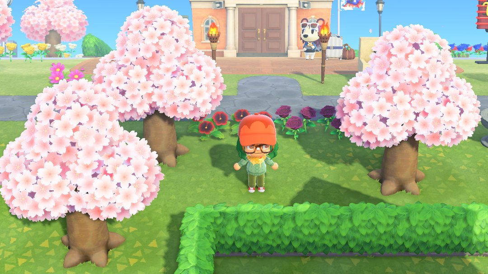

さくらの季節：4月1日〜10日、あみではなびらをすくおう
1年にたった10日間：はなびらのすくい方、DIYレシピの覚え方、さくらの家具15種類の素材を1つの表に
さくらの季節は、季節の素材の中でいちばん短い2つのうちの1つです（もう1つはもみじの季節）。北半球は4月1日〜10日、南半球は10月1日〜10日。この期間は島のこうようじゅにピンクの花が満開になり、空中をはなびらが舞います。あみを振ってすくえば、さくらのはなびらが手に入ります。
さくらのはなびらからは15種類のDIYが作れます。おはなみセット、さくらのぼんさい、さくらなみきのかべ、さくらのかさ……全部作るとはなびらが95枚必要です。10日間が過ぎると来年まで待つことになるので、この期間はできれば毎日島をひと回りして、はなびらを多めに集めておきましょう。

さくらの季節には、島の木が一面ピンクに染まります（画像：Nookipedia）
01どの10日間？
日付はゲーム内の時間です。南半球は北半球より半年遅れます。
| 半球 | 開始 | 終了 |
| 北半球 | 4月1日 | 4月10日 |
| 南半球 | 10月1日 | 10月10日 |
ゲームの1日は朝5時から始まるので、10日目の深夜から翌朝5時の前までは、まださくらの季節です。最後の夜にも、もう少しすくえます。
さくらの季節はまるごとはるのわかたけの季節の中にあるので、この10日間もはるのわかたけは取れます。北半球のイースターは年によってさくらの季節と重なることがあり、その間に撃ち落としたふうせんには、イースターのDIYレシピも混ざります。
02はなびらのすくい方
さくらのはなびらは空中をゆっくり舞っています。ムシをつかまえるときと同じように、あみを持ってねらって振るだけです。1枚200ベルなので売るのはもったいなく、家具の素材に取っておきましょう。
はなびらはポケットの1枠に10枚までしか重ねられないので、すぐにポケットがいっぱいになります。こまめに家の収納にしまって、ポケットをあけてからまたすくいましょう。
ヒントさくらのはなびらは家の収納にしまえます。季節が終わる前に多めに集めてしまっておけば、季節が過ぎても作れます。この季節のDIYレシピを覚えきれなくても大丈夫。あとで覚えたときに取り出して使いましょう。
03DIYレシピの入手先
10日間で15種類を覚えなければならず、時間はかなりぎりぎり。3つの入手先をすべて使いましょう。
いちばん大きいのはふうせんです。さくらの季節に飛んでくるふうせんを撃ち落とすと、この季節のDIYレシピが落ちてきます。この季節のレシピを全部覚えるまで出続けます。この10日間は、ふうせんを見かけたら追いかけて撃ち落としましょう。
次に初日の案内所。北半球は4月1日、南半球は10月1日に、たぬきちかしずえが「おはなみセット」のDIYレシピをくれます。もらえるのは初日だけなので、その日は忘れずに行きましょう。
3つ目はかっぺいのボートツアーです。下で説明します。
逃してしまったら：かっぺいの船で取り戻す
桟橋のかっぺいは、1日1回、1,000マイルで海へ連れ出してくれます。ときどき季節が止まったままの島に着くことがあり、さくらが満開の島もその1つで、季節の島はそれぞれ確率3%ほどです。その島ではさくらのはなびらがすくえ、浜辺のメッセージボトルにさくらのDIYレシピが入っていることもあります。さくらの季節は10日間しかないので、レシピを補うにはとても役立つ方法です。
確率は高くないので、運だめし程度に考えておきましょう。また、自分の島でこの季節を一度経験していないと、その島には連れていってもらえません。ホテルの1つ目のVIPルームをコーディネートすると、かっぺいは1日にもう1回（ホテルチケット100枚）船を出してくれるようになり、当たるチャンスも少し増えます。
04DIYレシピ15種類の一覧
| DIYレシピ | 素材 |
| おはなみセット 季節の初日に案内所でもらえる | さくらのはなびら10 |
| おはなみのちょうちん | さくらのはなびら6、かたいもくざい4 |
| さくらのぼんさい | さくらのはなびら6、かたいもくざい2、ざっそう3、ねんど3 |
| さくらのえだ | さくらのはなびら8、きのえだ4、ねんど5 |
| さくらクロック | さくらのはなびら5、てっこうせき1 |
| さくらのはなびらのやま | さくらのはなびら5 |
| いしのみずうけ～さくら～ | いし10、さくらのはなびら3 |
| さくらなみきのかべ | さくらのはなびら10、かたいもくざい5 |
| さくらのウッドウォール | さくらのはなびら5、もくざい10 |
| さくらのウッドフローリング | さくらのはなびら5、もくざい10 |
| さくらのじゅうたん | さくらのはなびら10、ざっそう20 |
| さくらのラグ Ver.2.0で追加 | さくらのはなびら6 |
| さくらのポシェット | さくらのはなびら6 |
| さくらのかさ | さくらのはなびら7 |
| さくらのステッキ | さくらのはなびら3、ほしのかけら3 |
15種類を全部作ると、さくらのはなびらが95枚、ほかにざっそう23、もくざい20、かたいもくざい11、いし10、ねんど8、きのえだ4、ほしのかけら3、てっこうせき1が必要です。
05まず作りたいもの
おはなみセット：初日にもらえるレシピ。レジャーシートにお弁当が並んだセットで、はなびら10枚で作れます。さくらの木の下に置けば、そこはもうお花見会場です。
さくらなみきのかべ、さくらのウッドフローリング、さくらのじゅうたん：部屋をさくらのテーマでまとめたいなら、壁・床・じゅうたんがいちばん目立ちます。さくらなみきのかべとさくらのじゅうたんははなびらを10枚ずつ使い、この季節でいちばんはなびらを食うレシピです。
さくらのかさ、さくらのポシェット：手に持ったり身につけたりする小物で、はなびら6〜7枚で作れます。春の写真撮影に大活躍します。
さくらのステッキ：この季節の魔法のステッキ。ひと振りすると、登録したコーディネートに着替えられます。
おはなみのちょうちんとさくらクロックは、作ったあとリメイクで色を変えることもできます。

さくらシリーズの家具でコーディネートした部屋（画像：Nookipedia）
ヒントはなびらが95枚に届かないときは、もう覚えていていちばん欲しいものから先に作り、残りのはなびらはしまっておきましょう。来年ほかのDIYレシピを覚えたときも、今年ためたはなびらはそのまま使えます。
06アップデートでの変化
さくらのラグのDIYレシピはVer.2.0で追加されました。かっぺいのボートツアーはVer.2.0で、ホテルの1つ目のVIPルームをコーディネートすると1日もう1回乗れる仕組みはVer.3.0で追加されました。
Nook Circle · App Store で「Nook Circle」を検索